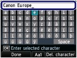

Registering User Information
Registering User Information Important Important
|
Display the User information settings screen.
(1) Press the Setup button.
(2) Select Device settings  , and press the OK button.
, and press the OK button.
(3) Select FAX settings, and press the OK button.
(4) Select FAX user settings, and press the OK button.
(5) Select User information settings, and press the OK button.
Enter a unit name.
(1) Confirm that Unit name is selected, and press the OK button.

The enter/edit screen will appear.
(2) Enter unit name (max. 24 characters, including spaces).

 Note Note
|
(3) Press the left Function button to select Done.
The screen will return to the User information settings screen.
Enter the unit fax/telephone number.
(1) Confirm that Unit TEL is selected, and press the OK button.
The enter/edit screen will appear.
(2) Enter unit fax/telephone number (max. 20 digits, including spaces).
| Note
|
(3) Press the left Function button to select Done.
The screen will return to the User information settings screen.
(4) Press the left Function button to select Register.
The settings will be applied as user information.
Press the FAX button to return to the fax standby screen.